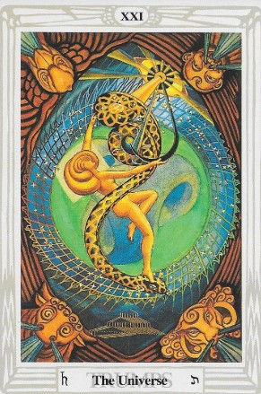

El Tarot de Thoth te trae el mensaje de El Universo, una carta que representa la culminación, el éxito y la integración. 🌍✨
El Universo simboliza la finalización de un ciclo, el logro de objetivos y la conexión con el todo.
Hoy es un día para celebrar los logros alcanzados. Has llegado a una etapa de plenitud y realización.
Te sentirás en armonía con el universo. Confía en tu crecimiento y en el camino recorrido.
Este cierre de ciclo trae consigo nuevas oportunidades. Prepárate para la próxima aventura.
Las relaciones alcanzan un nivel más profundo de entendimiento y compromiso.
Se reconocen tus esfuerzos y podrías alcanzar una meta importante.
Momento de estabilidad financiera. Disfruta de lo que has logrado.
Una etapa de bienestar y equilibrio. Escucha a tu cuerpo y sigue cuidándote.
"Celebro mi camino y todo lo que he aprendido.
Me abro a nuevas posibilidades con gratitud y confianza.
Soy parte del todo y el universo está en mí."